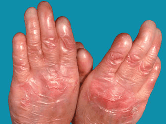

Dystrophic epidermolysis bullosa (DEB) is a very rare inherited skin disorder. The skin of those who have DEB is more fragile than normal.
Minor injury causes blisters which often leave scars when they heal. DEB can be mild, causing little more than minor inconvenience,
but it can also be severe, affecting the mouth, gullet and eyes in addition to the skin. DEB is not an infection, it is not
contagious and it is not due to an allergy.
There are other types of epidermolysis bullosa (EB) - the simplex and junctional forms - but if you have DEB, you will not
develop another type of EB at a later date.

Medications can help control pain and itching and address complications such as infection in the bloodstream (sepsis). Prescription oral antibiotics may be used if you show signs of a deep or widespread infection (fever, weakness, swollen lymph glands).
An oral anti-inflammatory drug (corticosteroid) may help reduce the pain from dysphagia (difficulty swallowing).
Surgery may be considered to correct normal motion or to improve your ability to eat a healthy diet.
Working with a rehabilitation specialist (physical therapist, occupational therapist) can help ease the limitations on
motion caused by scarring and shortening of the skin (contracture). A rehabilitation specialist can also give you guidance
on the best ways to keep you or your child safe while going about daily activities. Swimming may also be helpful in
preserving or regaining mobility.